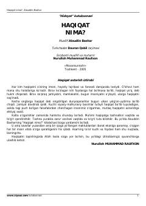

HNHayot mazmuni va mutlaq haqiqatni izlash haqidagi falsafiy maktublar to'plami.
Ushbu asar muallif va yosh qiz o'rtasidagi maktublar almashinuvi orqali hayotning mazmuni va mutlaq haqiqatni izlash mavzularini yoritadi. Kitob insonning dunyoqarashini shakllantirishda va haqiqatni anglashda yo'l-yo'riq vazifasini o'taydi.